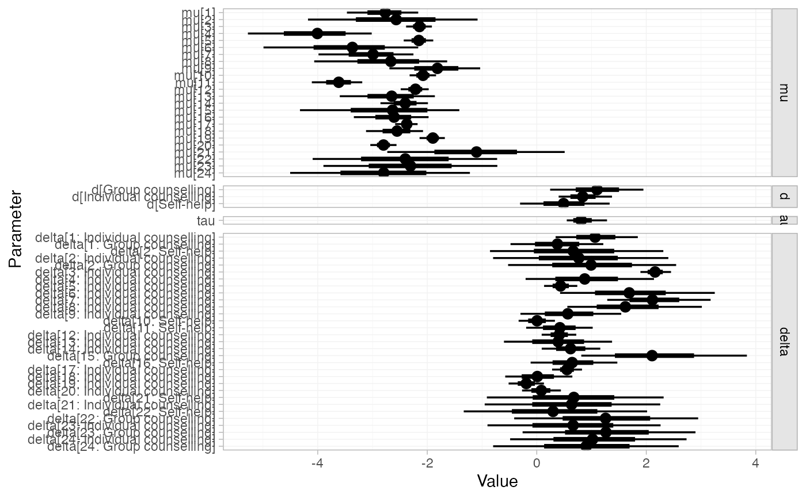
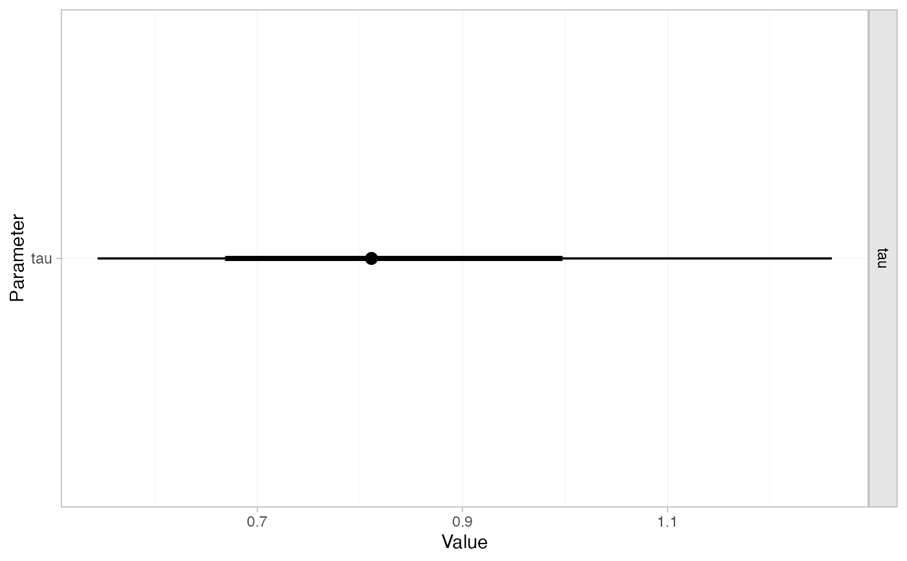
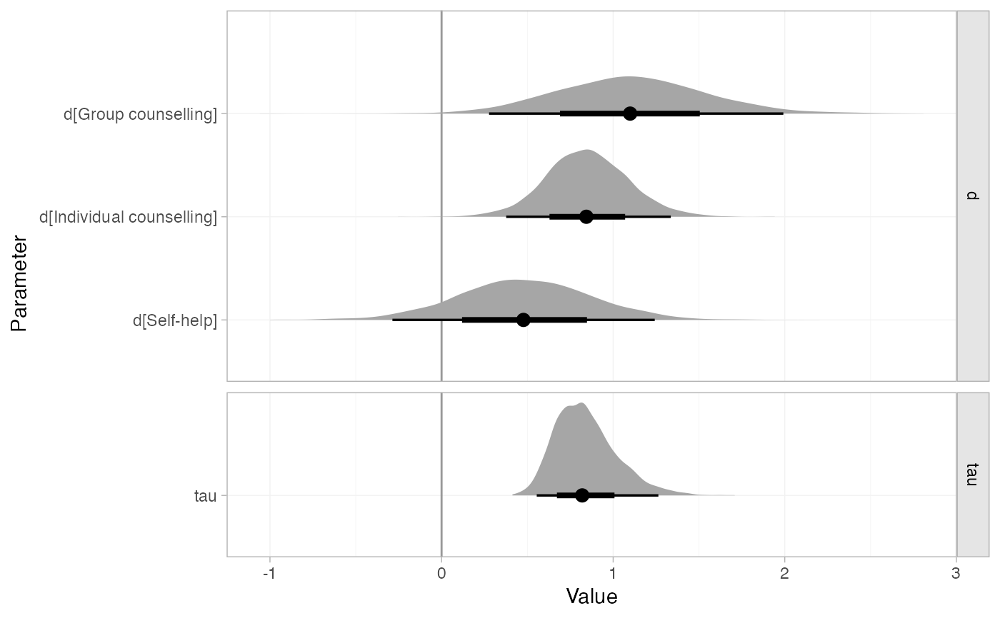

Posterior summaries of model parameters in stan_nma objects may be produced
using the summary() method and plotted with the plot() method. NOTE: To
produce relative effects, absolute predictions, or posterior ranks, see
relative_effects(), predict.stan_nma(), posterior_ranks(),
posterior_rank_probs().
Arguments
- ...
Additional arguments passed on to other methods
- pars, include
See
rstan::extract()- probs
Numeric vector of specifying quantiles of interest, default
c(0.025, 0.25, 0.5, 0.75, 0.975)- x, object
A
stan_nmaobject- stat
Character string specifying the
ggdistplot stat to use, default"pointinterval"- orientation
Whether the
ggdistgeom is drawn horizontally ("horizontal") or vertically ("vertical"), default"horizontal"- ref_line
Numeric vector of positions for reference lines, by default no reference lines are drawn
- summary
Logical, calculate posterior summaries? Default
TRUE.
Value
A nma_summary object
Details
The plot() method is a shortcut for plot(summary(stan_nma)). For
details of plotting options, see plot.nma_summary().
Examples
## Smoking cessation
# \donttest{
# Run smoking RE NMA example if not already available
if (!exists("smk_fit_RE")) example("example_smk_re", run.donttest = TRUE)
# }
# \donttest{
# Summary and plot of all model parameters
summary(smk_fit_RE)
#> mean sd 2.5% 25% 50% 75% 97.5%
#> mu[1] -2.78 0.33 -3.46 -3.00 -2.77 -2.56 -2.17
#> mu[2] -2.58 0.78 -4.17 -3.07 -2.56 -2.07 -1.08
#> mu[3] -2.14 0.12 -2.38 -2.22 -2.14 -2.06 -1.91
#> mu[4] -4.05 0.57 -5.29 -4.41 -4.03 -3.66 -3.02
#> mu[5] -2.16 0.14 -2.45 -2.25 -2.15 -2.06 -1.89
#> mu[6] -3.42 0.75 -5.08 -3.83 -3.33 -2.91 -2.17
#> mu[7] -3.01 0.44 -3.94 -3.29 -2.98 -2.71 -2.24
#> mu[8] -2.69 0.59 -3.97 -3.06 -2.65 -2.28 -1.65
#> mu[9] -1.84 0.42 -2.72 -2.11 -1.82 -1.55 -1.07
#> mu[10] -2.08 0.12 -2.32 -2.16 -2.08 -2.00 -1.86
#> mu[11] -3.62 0.23 -4.10 -3.77 -3.61 -3.46 -3.20
#> mu[12] -2.22 0.13 -2.47 -2.31 -2.22 -2.13 -1.97
#> mu[13] -2.68 0.44 -3.59 -2.96 -2.66 -2.38 -1.88
#> mu[14] -2.41 0.23 -2.88 -2.56 -2.40 -2.26 -1.98
#> mu[15] -2.65 0.71 -4.22 -3.08 -2.58 -2.15 -1.41
#> mu[16] -2.62 0.34 -3.34 -2.84 -2.60 -2.39 -1.99
#> mu[17] -2.38 0.11 -2.59 -2.45 -2.38 -2.30 -2.17
#> mu[18] -2.57 0.27 -3.13 -2.75 -2.56 -2.39 -2.07
#> mu[19] -1.90 0.12 -2.13 -1.98 -1.90 -1.82 -1.68
#> mu[20] -2.80 0.13 -3.05 -2.89 -2.80 -2.72 -2.56
#> mu[21] -1.13 0.81 -2.71 -1.63 -1.12 -0.61 0.46
#> mu[22] -2.40 0.84 -4.12 -2.91 -2.39 -1.86 -0.76
#> mu[23] -2.30 0.82 -3.93 -2.84 -2.29 -1.77 -0.72
#> mu[24] -2.78 0.85 -4.55 -3.32 -2.75 -2.22 -1.10
#> d[Group counselling] 1.08 0.42 0.24 0.81 1.08 1.34 1.93
#> d[Individual counselling] 0.83 0.24 0.37 0.67 0.82 0.99 1.34
#> d[Self-help] 0.50 0.40 -0.29 0.24 0.49 0.76 1.32
#> tau 0.82 0.18 0.54 0.70 0.80 0.93 1.24
#> delta[1: Individual counselling] 1.07 0.38 0.36 0.81 1.05 1.31 1.84
#> delta[1: Group counselling] 0.37 0.42 -0.46 0.09 0.37 0.65 1.23
#> delta[2: Self-help] 0.68 0.79 -0.84 0.16 0.67 1.17 2.27
#> delta[2: Individual counselling] 0.76 0.79 -0.76 0.25 0.74 1.26 2.34
#> delta[2: Group counselling] 0.99 0.79 -0.55 0.47 0.99 1.50 2.58
#> delta[3: Individual counselling] 2.16 0.14 1.90 2.07 2.16 2.25 2.43
#> delta[4: Individual counselling] 0.91 0.58 -0.14 0.52 0.88 1.26 2.14
#> delta[5: Individual counselling] 0.44 0.16 0.14 0.33 0.44 0.55 0.75
#> delta[6: Individual counselling] 1.70 0.73 0.45 1.19 1.65 2.13 3.33
#> delta[7: Individual counselling] 2.13 0.47 1.28 1.80 2.10 2.43 3.11
#> delta[8: Individual counselling] 1.64 0.60 0.58 1.21 1.60 2.02 2.92
#> delta[9: Individual counselling] 0.58 0.46 -0.30 0.27 0.58 0.89 1.52
#> delta[10: Self-help] 0.01 0.17 -0.32 -0.10 0.01 0.12 0.35
#> delta[11: Self-help] 0.40 0.31 -0.21 0.20 0.40 0.61 1.02
#> delta[12: Individual counselling] 0.41 0.17 0.09 0.30 0.41 0.52 0.74
#> delta[13: Individual counselling] 0.39 0.50 -0.58 0.06 0.39 0.72 1.37
#> delta[14: Individual counselling] 0.62 0.28 0.07 0.43 0.62 0.81 1.18
#> delta[15: Group counselling] 2.11 0.74 0.79 1.61 2.04 2.55 3.73
#> delta[16: Self-help] 0.66 0.40 -0.11 0.39 0.65 0.91 1.45
#> delta[17: Individual counselling] 0.55 0.14 0.28 0.46 0.55 0.65 0.82
#> delta[18: Individual counselling] 0.03 0.31 -0.57 -0.18 0.03 0.24 0.65
#> delta[19: Individual counselling] -0.19 0.17 -0.52 -0.30 -0.19 -0.08 0.13
#> delta[20: Individual counselling] 0.08 0.19 -0.29 -0.05 0.08 0.20 0.44
#> delta[21: Self-help] 0.70 0.81 -0.91 0.18 0.68 1.21 2.35
#> delta[21: Individual counselling] 0.65 0.79 -0.94 0.14 0.65 1.16 2.25
#> delta[22: Self-help] 0.32 0.82 -1.31 -0.21 0.31 0.84 1.98
#> delta[22: Group counselling] 1.27 0.83 -0.38 0.72 1.26 1.79 2.98
#> delta[23: Individual counselling] 0.66 0.81 -0.93 0.15 0.65 1.17 2.24
#> delta[23: Group counselling] 1.26 0.83 -0.36 0.71 1.24 1.80 2.91
#> delta[24: Individual counselling] 1.02 0.81 -0.53 0.48 1.00 1.54 2.70
#> delta[24: Group counselling] 0.87 0.84 -0.80 0.33 0.88 1.40 2.56
#> Bulk_ESS Tail_ESS Rhat
#> mu[1] 4702 3002 1
#> mu[2] 2551 2147 1
#> mu[3] 6854 2907 1
#> mu[4] 4139 2720 1
#> mu[5] 6945 3037 1
#> mu[6] 3245 2270 1
#> mu[7] 4406 2276 1
#> mu[8] 3176 2768 1
#> mu[9] 4671 2776 1
#> mu[10] 7850 2512 1
#> mu[11] 6283 2985 1
#> mu[12] 6818 3243 1
#> mu[13] 4644 3373 1
#> mu[14] 4980 3103 1
#> mu[15] 3742 2832 1
#> mu[16] 6163 2816 1
#> mu[17] 7542 2893 1
#> mu[18] 4771 2967 1
#> mu[19] 7289 3104 1
#> mu[20] 7743 3112 1
#> mu[21] 3014 2654 1
#> mu[22] 2692 2450 1
#> mu[23] 2619 2203 1
#> mu[24] 3443 2796 1
#> d[Group counselling] 1927 2122 1
#> d[Individual counselling] 1173 1735 1
#> d[Self-help] 1990 2528 1
#> tau 1325 2047 1
#> delta[1: Individual counselling] 4643 2990 1
#> delta[1: Group counselling] 5102 3512 1
#> delta[2: Self-help] 2562 2226 1
#> delta[2: Individual counselling] 2507 2210 1
#> delta[2: Group counselling] 2607 2240 1
#> delta[3: Individual counselling] 5779 3604 1
#> delta[4: Individual counselling] 4061 2993 1
#> delta[5: Individual counselling] 6470 3191 1
#> delta[6: Individual counselling] 3045 2086 1
#> delta[7: Individual counselling] 3971 2526 1
#> delta[8: Individual counselling] 3207 2895 1
#> delta[9: Individual counselling] 4229 2937 1
#> delta[10: Self-help] 4939 3328 1
#> delta[11: Self-help] 5902 2787 1
#> delta[12: Individual counselling] 6123 3461 1
#> delta[13: Individual counselling] 4892 3512 1
#> delta[14: Individual counselling] 4716 2910 1
#> delta[15: Group counselling] 3342 2573 1
#> delta[16: Self-help] 5791 3057 1
#> delta[17: Individual counselling] 5685 3582 1
#> delta[18: Individual counselling] 4858 3031 1
#> delta[19: Individual counselling] 5674 3663 1
#> delta[20: Individual counselling] 6179 3603 1
#> delta[21: Self-help] 2970 2569 1
#> delta[21: Individual counselling] 2943 2276 1
#> delta[22: Self-help] 2805 2764 1
#> delta[22: Group counselling] 2644 2486 1
#> delta[23: Individual counselling] 2656 2650 1
#> delta[23: Group counselling] 2583 2185 1
#> delta[24: Individual counselling] 3462 2900 1
#> delta[24: Group counselling] 3550 2859 1
plot(smk_fit_RE)

# Summary and plot of heterogeneity tau only
summary(smk_fit_RE, pars = "tau")
#> mean sd 2.5% 25% 50% 75% 97.5% Bulk_ESS Tail_ESS Rhat
#> tau 0.82 0.18 0.54 0.7 0.8 0.93 1.24 1325 2047 1
plot(smk_fit_RE, pars = "tau")

# Customising plot output
plot(smk_fit_RE,
pars = c("d", "tau"),
stat = "halfeye",
ref_line = 0)

# }